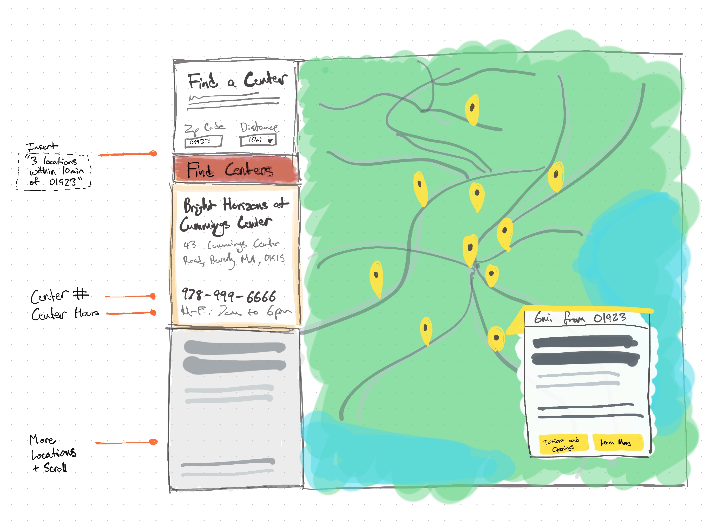
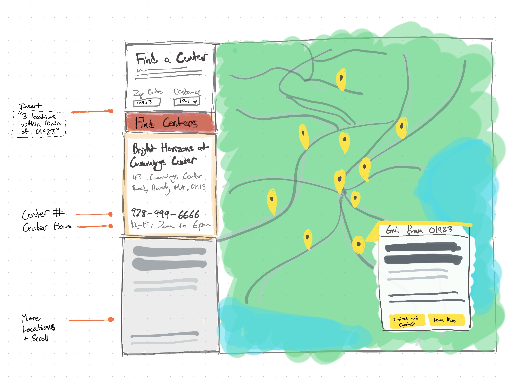
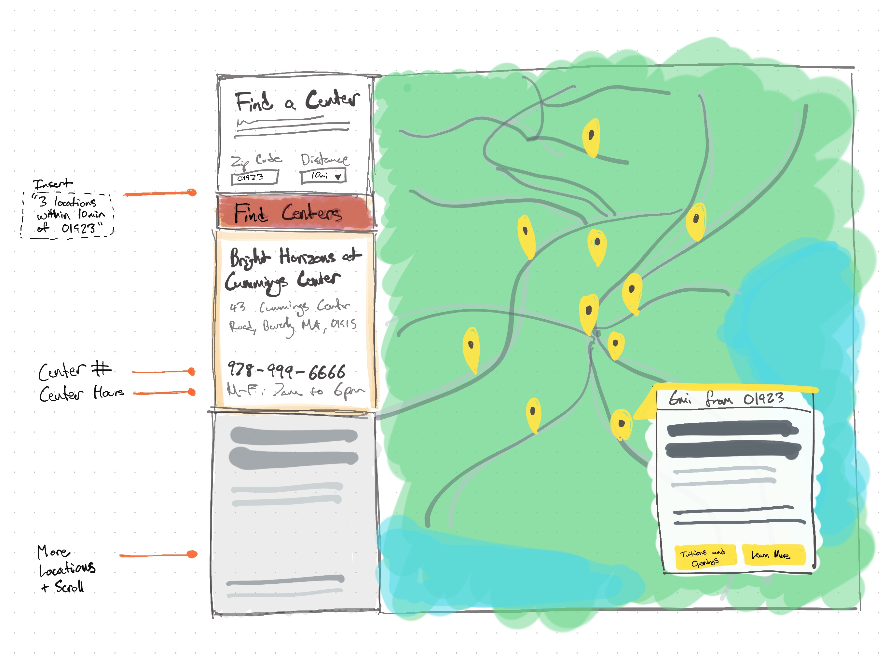

Bright Horizons was seeking to improve one of their many child care lead generation processes by iterating on their center location tool. The old experience was unfriendly to mobile devices, lacked clarity in areas where there are a lot of child care centers, and wasn't built on a system that could be updated easily.
The solution was broken into three core parts:
The hardest part of improving the locator tool was determining which improvement would make the most impact to the large user base. The old locator tool was forcing users to locate their nearest location via a massive full screen map and a tiny ZIP code box that was attached to an infinite scrolling results list.
First, to create the largest improvement we needed to first ensure the largest possible audience could use the tool regardless of which device they were on. This meant addressing the layout; our thinking led us to separating the search and results list from its old location which used to overlay the map.

Adding key pieces of information to the existing map pins was what we identified as the lowest hanging fruit (the easiest improvement). Users on the internet today who use maps are familiar with the mental model of pins and we wanted to lean into that by adding only the essential pieces of information parents need to know as a way to declutter the design and lighten up the search results.
After internal review we determined that while the presentation of the map and its results was in a better spot than before, the vertical split of map and search results was too closely mirroring the old locator and was ultimately still limiting mobile visitors control. Therefore a decision was made to pivot the map and search tools into a horizontal 50/50 split of the page with a much more introductory landing experience for new visitors. This would then lead into a more refined results page with filtering controls and a set of double cards. By providing more visual room to massage information around we were able to design friendlier to different device types.

Upon final review we scrapped the early introductory search screens as they took too many clicks to see results and instead planted the visitor directly into the map experience. This became an incredibly streamlined flow for the user as they could now immediately search for their location or choose pins upon initial arrival. Additionally the presentation of multiple cards on screen along with essential filters gives the user maximum control without detracting from their initial purpose of visit.
We knew we were on the right track when the mobile wireframe prototypes could still operate naturally as a map, and the search and results page didn't detract from the overall goal of finding a center.
The live version of the new Center Locator tool can be seen here. This improved tool has enabled Bright Horizons to better display the locations of their child care centers, highlight to their users essential information they need to know about each one, and streamlined their lead collection experience.
2020 - New Homepage 2019 - Single Page Lead Form